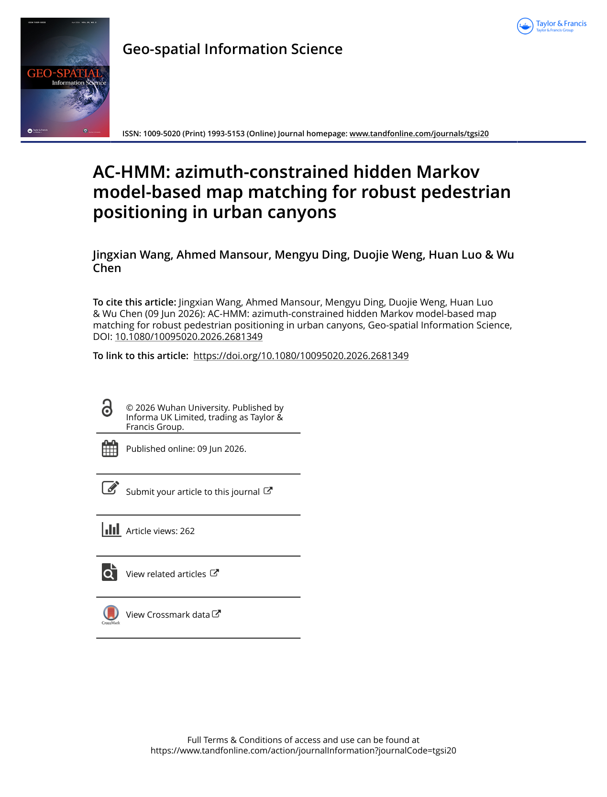
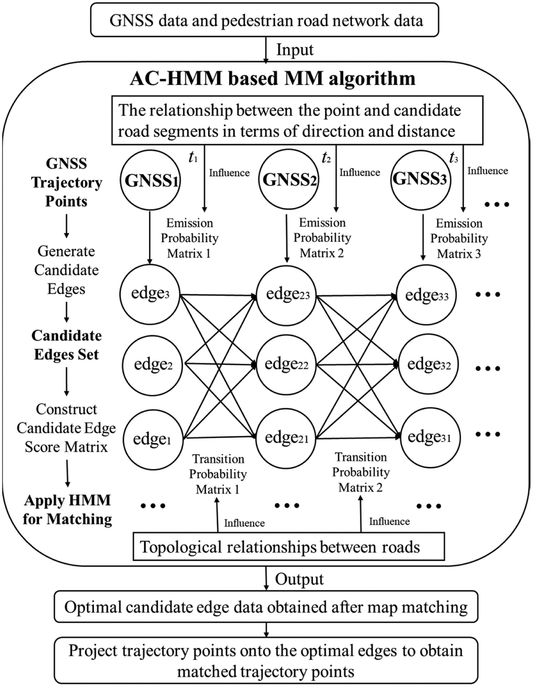
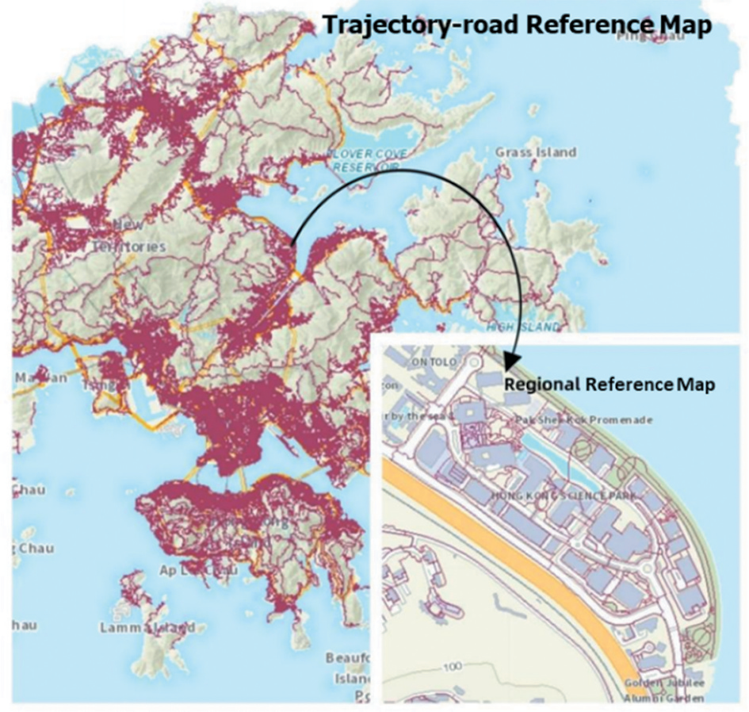

AC-HMM: azimuth-constrained hidden Markov model-based map matching for robust pedestrian positioning in urban canyons
Paper preview

Key figures


Summary
This paper develops an azimuth-constrained HMM map-matching approach for robust pedestrian positioning in urban canyons, where constrained motion and directional information can improve trajectory reliability.
When to cite this paper
- HMM-based map matching is used for pedestrian positioning
- azimuth or heading constraints support urban navigation
- urban canyon GNSS/PDR positioning is corrected by map information
- robust trajectory estimation is required in constrained street networks
Keywords
map matchinghidden Markov modelazimuth constraintpedestrian positioningurban canyonGNSSPDR
Official link
https://doi.org/10.1080/10095020.2026.2681349
For publisher-restricted articles, link to the DOI or an allowed accepted manuscript rather than uploading a restricted PDF.
BibTeX
@article{Wang2026achmm,
title = {AC-HMM: azimuth-constrained hidden Markov model-based map matching for robust pedestrian positioning in urban canyons},
author = {Jingxian Wang and Ahmed Mansour and Mengyu Ding and Duojie Weng and Huan Luo and Wu Chen},
year = {2026},
journal = {Geo-spatial Information Science},
doi = {10.1080/10095020.2026.2681349},
}